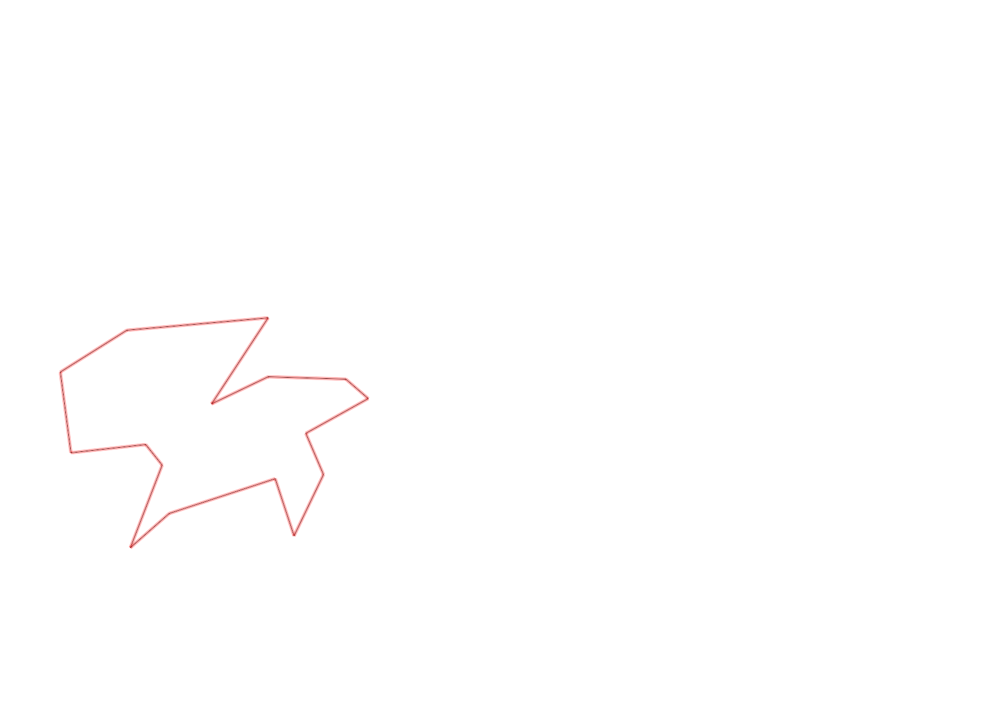
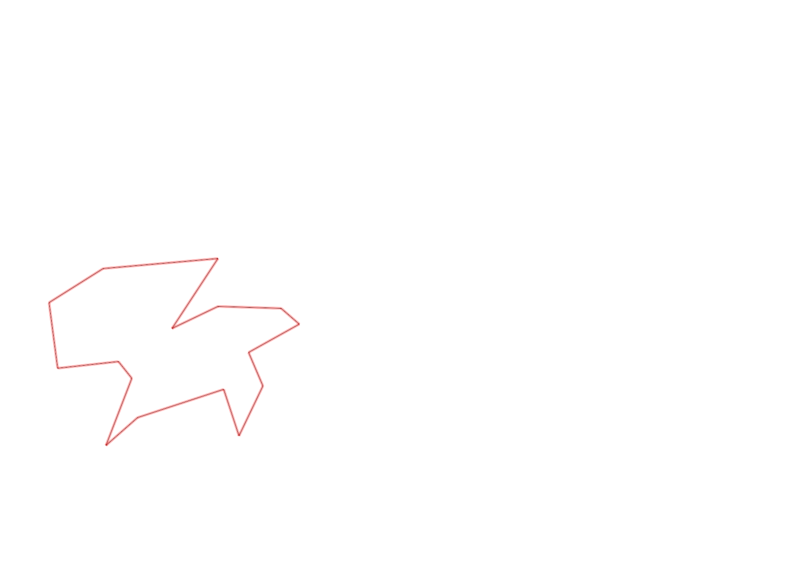

| Control |
Points |
Time Punched |
Distance |
Your Time |
Pace |
Place |
Fastest Time |
Median Time |
% Behind Fastest |
| 126 |
20 |
|
0.17 |
0:06:32 |
38:25 |
1 / 1 |
0:06:32 |
0:06:32 |
0% |
| 130 |
30 |
|
0.13 |
0:01:36 |
12:18 |
2 / 2 |
0:00:35 |
0:01:05 |
174% |
| 58 |
50 |
|
0.22 |
0:03:29 |
15:50 |
1 / 1 |
0:03:29 |
0:03:29 |
0% |
| 32 |
30 |
|
0.3 |
0:01:29 |
04:56 |
3 / 4 |
0:00:58 |
0:01:14 |
53% |
| 55 |
50 |
|
0.17 |
0:01:58 |
11:34 |
1 / 1 |
0:01:58 |
0:01:58 |
0% |
| 53 |
50 |
|
0.17 |
0:04:29 |
26:22 |
1 / 1 |
0:04:29 |
0:04:29 |
0% |
| 45 |
40 |
|
0.16 |
0:01:00 |
06:15 |
2 / 6 |
0:00:59 |
0:01:04 |
1% |
| 62 |
60 |
|
0.06 |
0:04:12 |
1:10:00 |
5 / 6 |
0:00:39 |
0:01:40 |
546% |
| 40 |
40 |
|
0.19 |
0:03:25 |
17:58 |
1 / 1 |
0:03:25 |
0:03:25 |
0% |
| 41 |
40 |
|
0.11 |
0:00:54 |
08:10 |
1 / 1 |
0:00:54 |
0:00:54 |
0% |
| 60 |
60 |
|
0.24 |
0:02:00 |
08:20 |
1 / 2 |
0:02:00 |
0:03:35 |
0% |
| 74 |
70 |
|
0.13 |
0:01:33 |
11:55 |
1 / 1 |
0:01:33 |
0:01:33 |
0% |
| 38 |
30 |
|
0.14 |
0:01:06 |
07:51 |
1 / 1 |
0:01:06 |
0:01:06 |
0% |
| 43 |
40 |
|
0.1 |
0:02:17 |
22:50 |
1 / 1 |
0:02:17 |
0:02:17 |
0% |
| 127 |
20 |
|
0.15 |
0:03:55 |
26:06 |
1 / 1 |
0:03:55 |
0:03:55 |
0% |
| Finish |
0 |
|
0.06 |
0:11:37 |
3:13:36 |
1 / 1 |
0:11:37 |
0:11:37 |
0% |
Total Distance Covered: 2.5km
Points Scored: 630
Late Penalty: 0
Final Score: 630
Total Time: 0hours 51minutes 32seconds
Efficiency: 252.0 points/km
 
